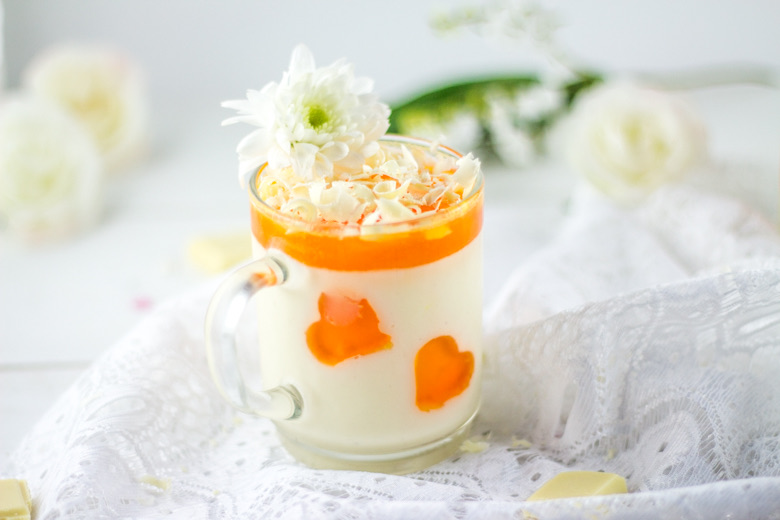
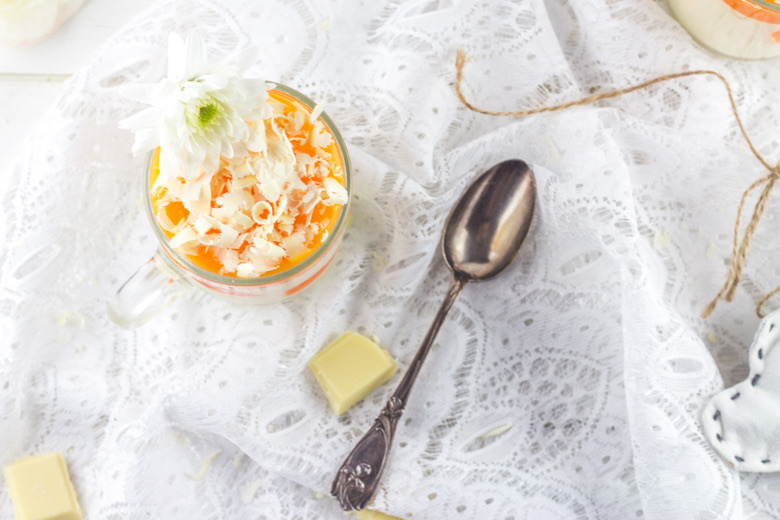
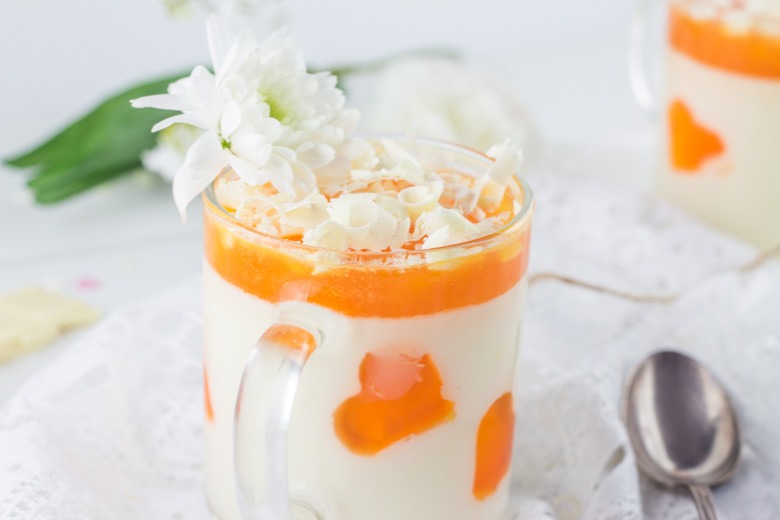
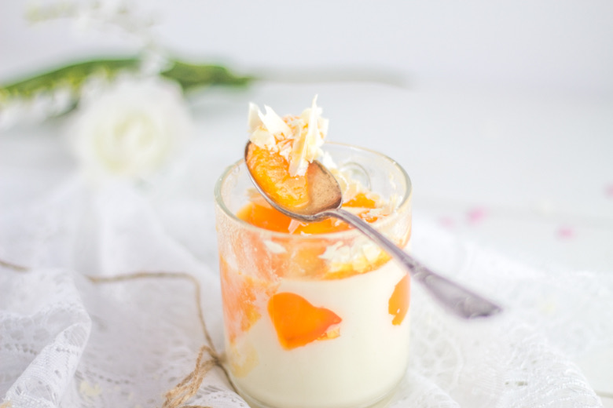

Panna cotta chocolat blanc et clémentines corses

Aujourd’hui on se retrouve à nouveau avec une recette pour faire chavirer les cœurs avec une délicieuse panna cotta chocolat blanc et clémentines corses!
Il s’agit ici de ma recette pour la Bataille Food qui est un défi culinaire lancé par la superbe Jenna du Bistro de Jenna qui réunit blogueurs et non-blogueurs autour d’un thème commun très gourmand! L’objectif étant de se faire plaisir, d’inventer et de partager de merveilleuses recettes!Aujourd’hui la bataille food#20 nous réunis autour du thème «Un zeste d’agrume tout en douceur » organisée par Lyne du blog Epices&moi .
Il fallait choisir un agrume (j’ai choisi les clémentines) et une touche d’onctuosité (j’ai donc choisi de la crème) et on s’est régalé! Association de crème et de gélatine, la panna cotta est un dessert qui nous vient tout droit d’Italie et qui signifie « crème cuite ». J’ai choisi de réaliser une panna cotta chocolat blanc pour le côté « douceur » et j’ai profité des dernières clémentines corses que j’ai pu trouver pour réaliser un sirop et des petits cœurs en gélatine (troooop mignooon). Je suis assez déçue d’ailleurs que ce soit la fin de la saison des clémentines corses car ce sont vraiment mes préférées alors vivement l’an prochain 🙂 A force de traîner sur pinterest, on est envahi d’idées et c’est là où j’ai trouvé ce décor en gélatine trop mimi que je me suis empressée de reproduire. Entre l’anniversaire de mon chéri qui tombe ce mois ci, la Saint-Valentin et dans quelques temps notre anniversaire de rencontre (oooouh) les petits cœurs pleuvent un peu tous les jours à la maison alors pourquoi pas dans nos assiettes aussi!!
Je vous laisse découvrir la recette de cette panna cotta chocolat blanc et sirop de clémentines en espérant qu’elle vous plaira autant qu’elle nous a plu!
Ingrédients
- Crème à 30% - 500ml
- Sucre vanillé - 1 sachet
- Sucre - 80g
- Feuilles de gelatine - 2 soit 4g
- Chocolat blanc - 145g
- Clémentines corses - 6 (selon calibre choisi)
- Feuille de gélatine - 1 soit 2g
- Sucre - 4 càs
Instructions
- Faire ramollir les feuilles de gélatine dans un volume d'eau froide
- Porter la crème liquide à ébullition avec le sucre et le sucre vanillé.
- Retirer ensuite la crème du feu et ajouter le chocolat blanc en petits carrés
- Mélanger jusqu'à ce que le chocolat soit totalement fondu
- Ajouter la gélatine après l'avoir bien égouttée et mélanger jusqu'à ce qu'elle soit totalement dissoute
- Laisser refroidir Si vous ne laissez pas refroidir la panna cotta, les cœurs en gélatine vont se ramollir!!
- Verser la panna cotta refroidie dans des verrines, verres ou autres contenants de votre choix et laisser refroidir au réfrigérateur jusqu'au lendemain
- Récupérer les suprêmes de 3 clémentines: pelez à vif la clémentine (c'est à dire supprimer la pellicule blanche qui recouvre la chair du fruit) Je vous conseil d'utiliser un couteau bien aiguisé, puis de découper délicatement les quartiers en les détachant tout doucement et en laissant le moins de peau possible sur la membrane du fruit
- Les disposer sur le dessus de la panna cotta
- Presser 3 clémentines et récupérer leur jus
- Dans une petite casserole sur feu moyen, faire réduire le jus avec le sucre
- Hors du feu ajouter la feuille de gélatine
- Laisser tiédir et verser le sirop sur le dessus de vos panna cotta
- Placer au frais 2 bonnes heures avant de servir




Les tips de la communauté
Panna cotta très apprécée pour sa texture fondante et crémeuse. L'association chocolat blanc apaise les papilles et crée un dessert élégant et gourmand. Les commentaires sont unanimement positifs sur le résultat léger malgré la richesse apparente.
Astuces
- Le chocolat blanc apporte une douceur qui rehausse la panna cotta
- La gélatine doit être bien dissoute pour texture lisse
- Servir frais pour meilleure dégustation